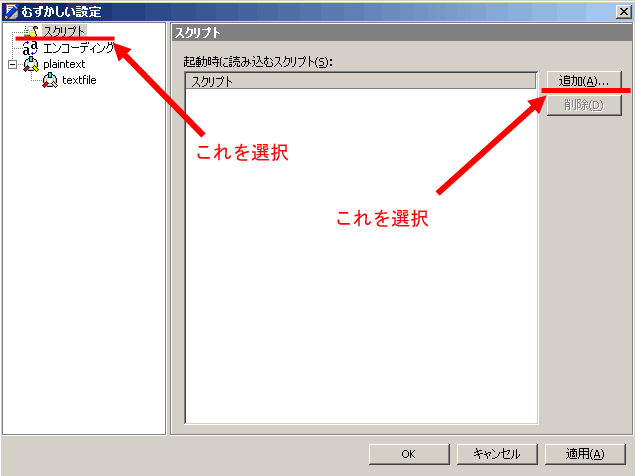
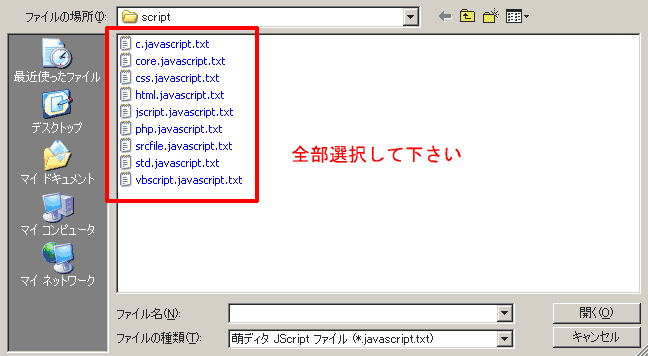

色分けの方法
標準の状態での萌ディタは、正直な所、MDIであることを除けばなんの変哲もないエディタでしかありません。
ここにJavaScriptで機能を追加していくことで出来ることを増やしていくのです
を呼び出してください
ダイアログ右側メニューのを選択して、さらにを選択します
あとは、ファイルを全部選択して登録して下さい。少々の依存関係とかもあるので、最初は、全部、登録するのを徹底して下さい
- core.javascript.txt
- std.javascript.txt
は既に読み込まれていると、ダイアログで出てくると思いますが、残りが一覧に登録されると思います
ココまで来れば、あともう一歩
をチェックして下さい。これで色分け機能が有効になります
色分け機能の強化
現在標準で着いているのだけでも、C言語、JavaScript、VBScriptの色分けをきちんとこなしますが、ほかにもスクリプトを組み込んでいくことで、様々な種類のファイルに対応可能です